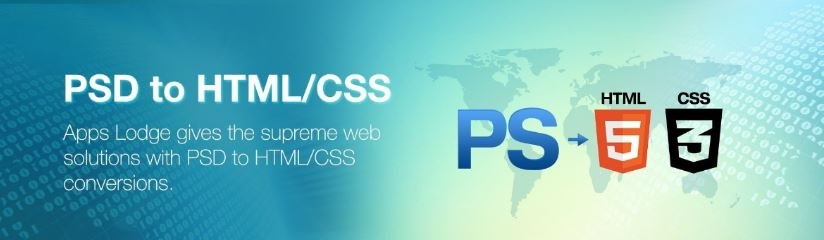

 PSD là tệp hình ảnh dưới dạng Layer và là định dạng mặc định để lưu dữ liệu của Photoshop. Khi thiết kế giao diện web, các nhà thiết kế thường thực hiện dưới dạng hình ảnh PSD. Tuy nhiên, để biến hình ảnh thiết kế đó thành giao diện web thực sự, coder sẽ phải cắt PSD sang HTML – yếu tố được sử dụng để xây dựng các thành phần có trong website. Vậy cắt PSD sang HTML như thế nào? Hãy cùng FPT Arena tìm hiểu nhé!
Back